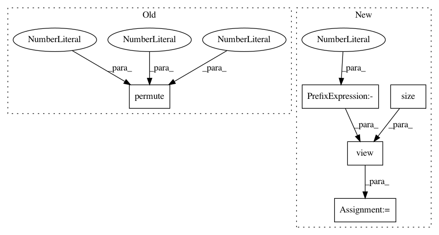

1b809b3c9570d617cb26949e40b921b36e826580,gpytorch/lazy/kronecker_product_lazy_variable.py,,_t_matmul,#Any#Any#,44
Before Change
.transpose(0, 1)
.contiguous()
)
factor = lazy_var._t_matmul(res).permute(1, 3, 2, 0)
res = factor.contiguous().view(n_batch, -1, n_cols)
else:
res = res.t().contiguous().view(n_cols, lazy_var.size(-2), -1)
factor = lazy_var._t_matmul(res).permute(2, 1, 0)
After Change
else:
res = res.view(lazy_var.size(-2), -1)
factor = lazy_var._t_matmul(res)
factor = factor.view(lazy_var.size(-1), -1, n_cols).transpose(-3, -2).contiguous().view(-1, n_cols)
res = factor.contiguous().view(-1, n_cols)
return res
In pattern: SUPERPATTERN
Frequency: 3
Non-data size: 5
Instances
Project Name: cornellius-gp/gpytorch
Commit Name: 1b809b3c9570d617cb26949e40b921b36e826580
Time: 2018-08-31
Author: gpleiss@gmail.com
File Name: gpytorch/lazy/kronecker_product_lazy_variable.py
Class Name:
Method Name: _t_matmul
Project Name: ruotianluo/self-critical.pytorch
Commit Name: c8fadd2d970f1c62ae8a842464056263f8d1232f
Time: 2017-02-13
Author: rluo@ttic.edu
File Name: resnet.py
Class Name: myResnet
Method Name: forward